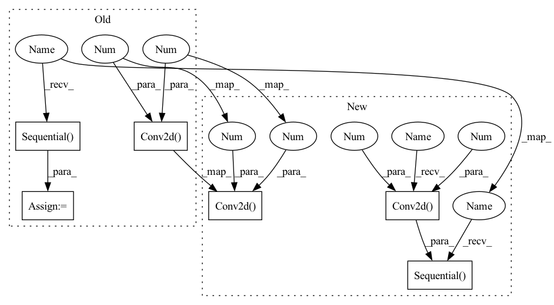

Pattern ID :327

Before Change
)
self.conv1 = nn.Conv2d(in_channels, out_channels, 3, 1, padding=1)
self.conv2 = nn.Conv2d(out_channels, out_channels, 3, 1, padding=1)
// Batch Normalization
self.bn1 = nn.BatchNorm2d(in_channels)
self.bn2 = nn.BatchNorm2d(out_channels)
self.model1 = nn.Sequential(
self.bn1,
nn.ReLU(),
nn.Upsample(scale_factor=2) if stride > 1 else nn.Identity(),
self.conv1,
)
self.model2 = nn.Sequential(
self.bn2,
nn.ReLU(),
nn.Dropout(dropout) if dropout > 0 else nn.Identity(),
self.conv2
)
self.bypass = nn.Sequential()
if stride != 1:
self.bypass = nn.Upsample(scale_factor=2)
def forward(self, x_in, noise_embed):
After Change
nn.BatchNorm2d(out_channels),
nn.ReLU(),
nn.Dropout(dropout) if dropout > 0 else nn.Identity(),
nn.Conv2d(out_channels, out_channels, 3, 1, padding=1)
)
self.bypass = nn.Sequential(
nn.Upsample(scale_factor=2) if stride > 1 else nn.Identity(),
nn.Conv2d(in_channels, out_channels, 1, 1)
)
def forward(self, x_in, noise_embed):
x = self.model1(x_in)
x = self.noise_func(x, noise_embed)
In pattern: SUPERPATTERN
Frequency: 3
Non-data size: 6
Instances
Fragment ID: 1221330
Project Name: janspiry/image-super-resolution-via-iterative-refinement
Commit Name: 6424546b8d11bea9ffa4165b94c8c16c56a1de62
Time: 2021-08-03
Author: lw_jiang@foxmail.com
File Name: model/modules/unet.py
Class Name: ResBlockUp
Method Name: __init__
Parent Class: nn.Module
Fragment ID: 1221362
Project Name: lucidrains/dalle-pytorch
Commit Name: 95a980129346b66ce7cbb3f984b698ca21e0965c
Time: 2021-01-06
Author: nauman.mustafa.x@gmail.com
File Name: dalle_pytorch/dalle_pytorch.py
Class Name: DiscreteVAE
Method Name: __init__
Parent Class: nn.Module
Fragment ID: 1221331
Project Name: janspiry/image-super-resolution-via-iterative-refinement
Commit Name: 6424546b8d11bea9ffa4165b94c8c16c56a1de62
Time: 2021-08-03
Author: lw_jiang@foxmail.com
File Name: model/modules/unet.py
Class Name: ResBlockUp
Method Name: __init__
Parent Class: nn.Module
Fragment ID: 1221335
Project Name: janspiry/image-super-resolution-via-iterative-refinement
Commit Name: eeae1c09083fea8dbb057a2ca7eb6b0e5e6a7e1b
Time: 2021-08-03
Author: jiangliangwei@tetras.com
File Name: model/modules/unet.py
Class Name: ResBlockUp
Method Name: __init__
Parent Class: nn.Module